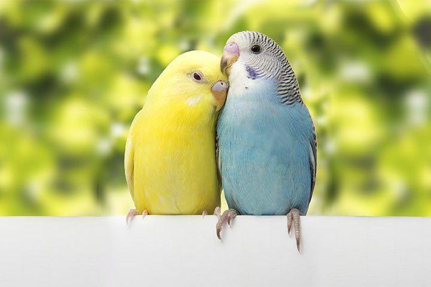

Hund
Du hast viel Zeit, bist gerne aktiv und möchtest eine enge Bindung zu deinem Haustier aufbauen.
Nicht jedes Tier passt zu jedem Menschen. Überlege dir, wie viel Zeit, Platz und Verantwortung du übernehmen kannst. Die folgenden Fragen helfen dir dabei, ein passendes Tier zu finden.
Dann könnte ein Hund eine gute Wahl für dich sein. Hunde benötigen viel Aufmerksamkeit, Bewegung und Beschäftigung.
Katzen sind oft unabhängiger als Hunde und können sich zeitweise selbst beschäftigen.
Für kleinere Wohnungen können Vögel eine geeignete Möglichkeit sein, sofern ihre Bedürfnisse erfüllt werden.
Hunde freuen sich über Spaziergänge, Training und gemeinsame Aktivitäten.
Katzen verbringen gerne Zeit mit ihren Menschen, genießen aber auch ihre Ruhephasen.
Du hast viel Zeit, bist gerne aktiv und möchtest eine enge Bindung zu deinem Haustier aufbauen.
Du suchst einen treuen Begleiter, der sowohl Gesellschaft als auch Freiraum schätzt.

Du verfügst über weniger Platz und möchtest dennoch einem Tier ein schönes Zuhause bieten.
Dieses kleine Quiz dient nur als Orientierung. Informiere dich immer ausführlich über die Bedürfnisse eines Tieres, bevor du eine Entscheidung triffst. Ein Haustier bedeutet Verantwortung für viele Jahre.